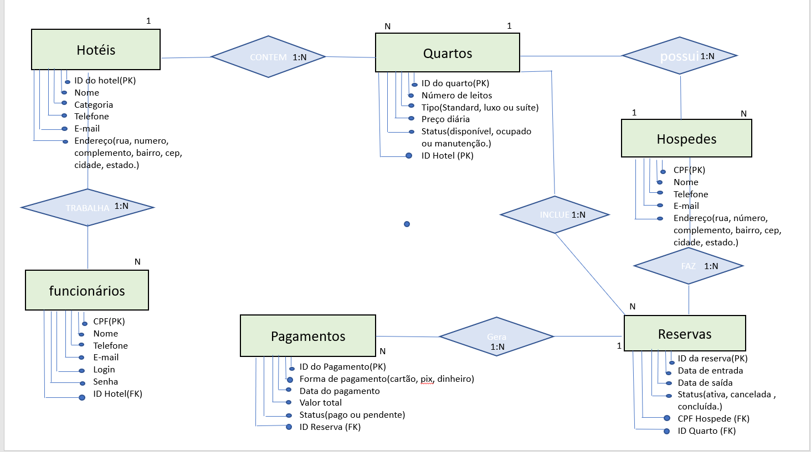
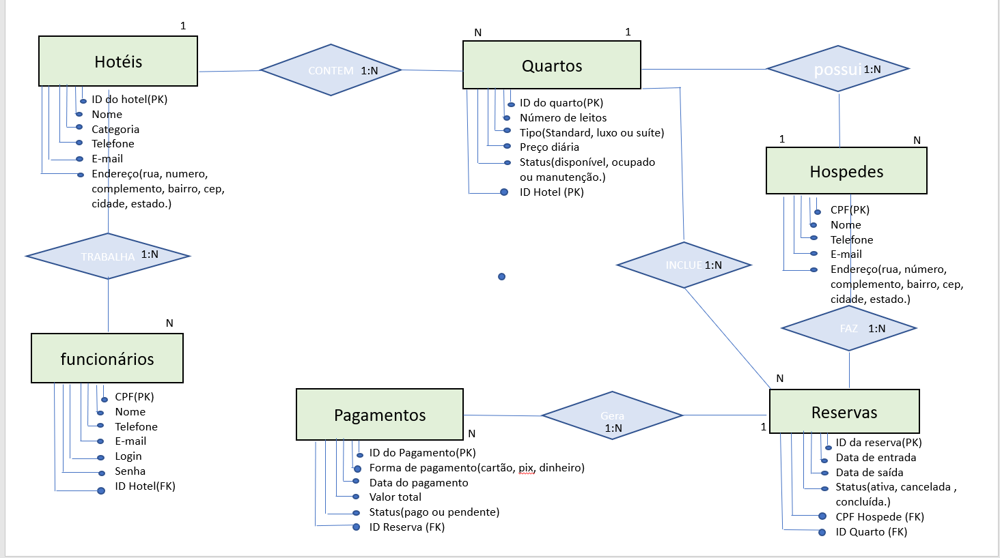

Portfólio
Modelagem de banco de dados(Modelo logico)

Modelagem de banco de dados(Modelo conceitual)

Me chamo Stefany Varsone Maculan, tenho 32 anos, sou casada há nove anos e mãe dedicada. Atualmente, estou cursando a graduação em Análise e Desenvolvimento de Sistemas na modalidade a distância (EAD), com o objetivo de ampliar meus conhecimentos e buscar novas oportunidades profissionais na área da tecnologia.
Trabalho como operadora de caixa em um supermercado, onde exerço minhas funções com responsabilidade, atenção e cordialidade no atendimento ao público. Minha trajetória é marcada pelo equilíbrio entre a vida profissional, os estudos e a dedicação à minha família, que é a base da minha motivação diária.
Nos momentos de lazer, gosto de explorar minha criatividade por meio de hobbies que me trazem prazer e tranquilidade. Entre eles, destaco a pintura a lápis, os trabalhos artesanais e as pequenas reformas e projetos de decoração em minha casa.
Sou capricorniana, o que se reflete em minha determinação, senso de organização e persistência diante dos desafios. Considero-me uma pessoa alegre, comunicativa e cercada de bons colegas e amigos. Aprecio passeios ao ar livre, viagens e, acima de tudo, os momentos simples e especiais ao lado da minha família, que são para mim uma fonte constante de amor e inspiração.
